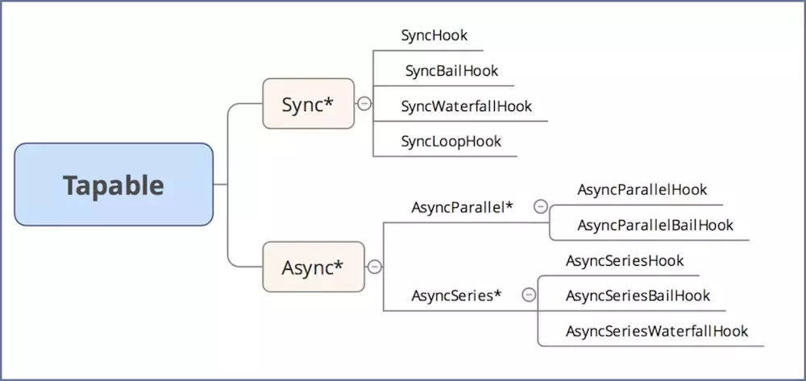

概念
https://www.webpackjs.com/concepts/
安装
生成 package.json
1 | npm init -y |
安装webpack 和 webpack-cli
1 | #-D 开发依赖，上线不需要 |
打包文件命令
1 | npx webpack |
安装常用 loader 和plugin
1 | # webpack-dev-server是webpack官方提供的一个小型Express服务器。使用它可以为webpack打包生成的资源文件提供web服务。 |
基础配置 webpack.config.js
html 插件
安装 html-webpack-plugin
1 | #安装 挂载到内存的插件 |
webpack.config.js 文件:
1 | const path = require("path"); |
导出的 ./dist 里面的 bundle.js 的文件：
1 | (function(modules) { // webpackBootstrap webpack入口函数 |
样式处理
需要安装的模块：
1 | #安装 css-loader style-loader 解析css文件 |
webpack.config.js 文件:
1 | const path = require("path"); |
在 ./src 目录中，
index.css 文件：
1 | @import './a.css'; |
a.css 文件：
1 | body { |
index.less 文件：
1 | body { |
在./build 目录下，有 bundle.js 、 index.html 以及 ./build/css 的 main.css
转换 ES6 语法
需要安装的模块：
1 | #安装 babel-loader @babel/core @babel/preset-env 来转换es6 语法 |
webpack.config.js 文件:
1 | const path = require("path"); |
在 ./src 目录中的 index.js 文件：
1 | // 此处都是 es6 语法，由于有些浏览器不支持es6标准，所以要用babel转成es5的代码 |
js 语法校验
需要安装的模块：
1 | #安装 eslint eslint-loader 来校验js语法 |
webpack.config.js 文件:
1 | const path = require("path"); |
.eslintrc.json 文件：
直接在
eslint官网生成 : https://cn.eslint.org/demo/
全局变量的引入
需要安装的模块：
1 | #安装 jquery 来 测试暴露全局的loader |
webpack.config.js 文件:
1 | const path = require("path"); |
在 ./src 中的 index.js 文件：
1 | // import $ from 'expose-loader?$!jquery'; // 内联loader |
图片处理
需要安装的模块：
1 | #安装 file-loader 默认生成一张新的图片到build目录下 生成图片名字返回 |
webpack.config.js 文件:
1 | const path = require("path"); |
在 ./src 中
index.js 文件：
1 | //file-loader 图片引入 返回一个新图片地址 |
index.css 文件：
1 | div { |
其他
配置 package.json
2
3
4
5
6
> "scripts": {
> "build": "webpack",
> "dev": "webpack-dev-server --open --port 3000 --hot "
> }
>
为什么是webpack.config.js
2
3
> defaultDescription: "webpack.config.js or webpackfile.js",
>
webpack.config.js改名之后运行
2
或者 package.json中配置
2
3
4
5
6
7
8
9
> "build" : "webpack --config webpack.config.my.js"
> }
> //执行 npm run build
> "scripts": {
> "build" : "webpack "
> }
> //执行 npm run build -- --config webpack.config.my.js
>
postcss.config.js配置（添加私有化前缀时需要配置）
2
3
4
> plugins: [require('autoprefixer')]
> }
>
配置
常用的小插件
安装
1 | # 安装clean-webpack-plugin 每次打包先清除dist目录下的文件 |
1 | plugins: [ |
打包多页应用
1 | //多入口需要写成一个对象 |
dev-tool的四个选项
1 | // 增加 devtool 源码映射 可以很方便的调试源代码 |
webpack跨域问题
1 | // server.js |
对应解决方法
1 | devServer:{ |
watch监视
1 | //监控 实时打包 类似node里边那个实时监控的 |
resolve属性
1 | resolve: { |
生产或者开发环境配置
1 | //webpack.pro.js |
webpack.config.js
1 | const path = require("path"); |
优化配置
安装
1 | #实现安装 |
webpack优化项
1 | //1. 不去解析jquery中的依赖库 |
抽取公共代码
1 | // webpack.config.js中的配置 抽取公共模块 |
webpack懒加载
1 | //需要babel配置 (@babel/plugin-syntax-dynamic-import) |
webpack热更新
1 | //热更新的概念 只更新页面的一部分 不全部更新 |
webpack.config.js
1 | const path = require('path') |
webpack.react.js(输出manifest.json)
1 | const path = require('path') |
Tapable
介绍：本质是一种事件流的机制，核心是把各个插件串联起来，实现这一核心的就是Tapable，类似于nodejs的events库，采用的发布订阅的模式

安装
1 | # 安装tapable |
同步钩子
SyncHook
1 | class SyncHook{ // 同步的钩子(实现) |
1 | // 同步的方法（同步钩子的实例） |
SyncBailHook
1 | class SyncBailHook{ // 同步的钩子(实现) |
1 | // 同步的方法（同步钩子的实例） |
SyncWaterfallHook
1 | class SyncWaterfallHook{ // 同步的钩子(实现) |
1 | // 同步的方法（同步钩子的实例） |
SyncLoopHook
1 | class SyncLoopHook{ // 同步的钩子(实现) |
1 | let {SyncLoopHook} = require('tapable'); //（同步钩子的实例） |
异步钩子
AsyncParralleHook
1 | class AsyncParralleHook { // AsyncParralleHook 的实现 |
AsyncParralleHook 的示例
1 | let { AsyncParallelHook } = require('tapable'); |
AsyncParralleHook（promise）
1 | // let {AsyncParralleHook} = require('tapable'); |
AsyncParallelBailHook（promise）的示例
1 | let { AsyncParallelBailHook } = require('tapable'); // 实现AsyncParallelBailHook |
AsyncSeriesHook
1 | class AsyncSeriesHook { |
AsyncSeriesHook（promise）
1 | class AsyncSeriesHook { |
AsyncSeriesHook（promise）的示例
1 | let { AsyncSeriesHook } = require('tapable'); |
AsyncSeriesWaterfallHook
1 | class AsyncSeriesWaterfallHook { |
AsyncSeriesWaterfallHook 的示例
1 | let { AsyncSeriesWaterfallHook } = require('tapable') |
手写 webpack
项目目录
手写webpack项目目录
2
3
4
5
6
7
> ├── bin
> │ └── hanke-webpack.js
> ├── lib
> │ └── Compiler.js
> └── package.json
>
要使用 手写webpack 的项目目录
2
3
4
5
6
> ├── node_modules
> │ └──
> ├── src
> └── package.json
>
安装
1 | cnpm i webpack webpack-cli -D |
package.json
2
3
4
5
> "bin":{
> "hanke-webpack": "./bin/hanke-webpack.js"
> }
>
bin相当于运行哪一个命令，执行哪一个文件
npm link的流程
2
3
4
5
6
7
8
9
10
11
12
npm link
# 运行结果为：C:\Users\zww\AppData\Roaming\npm\node_modules\hanke-webpack -> C:\Users\zww\Desktop\fe\webpack\hanke-webpack
# 即 npm 全局的安装路径下的node_modules\hanke-webpack 指向了 自定义的hanke-webpack目录
#在webpack-dev下
npm link hanke-webpack
# 运行结果为：C:\Users\zww\Desktop\fe\webpack\webpack-dev\node_modules\hanke-webpack -> C:\Users\zww\AppData\Roaming\npm\node_modules\hanke-webpack -> C:\Users\zww\Desktop\fe\webpack\hanke-webpack
# 即 项目中hanke-webpack模块 指向了 npm 全局的安装路径下的node_modules\hanke-webpack，而全局下的node_modules\hanke-webpack 又指向了 自定义的hanke-webpack目录
#注意 这样npm link后可以直接使用hanke-webpack.cmd 就可以在webpack-go5下边运行了
hanke-webpack.js最开始配置
2
3
4
5
6
7
8
9
10
11
12
13
14
15
16
17
18
> // 因为路径写错了导致一直出错
> #! F:/nodejs/node.exe //这里对应着自己node的下载地方
> /* 1、需要找到当前执行配置的项目路径，拿到webpack.config.js的配置*/
> let path = require('path')
>
> // 导入 config配置文件（即 webpack.config.js）
> let config = require(path.resolve('webpack.config.js'))
>
> let Compiler = require('../lib/Compiler')
>
> let compiler = new Compiler(config)
>
> //入口函数
> compiler.hooks.entryOption.call()
> // 标识运行编译
> compiler.run()
>
compile.js
2
3
4
5
6
7
8
9
10
11
12
13
14
15
16
17
18
19
20
21
22
23
24
25
26
27
28
29
30
31
32
33
34
35
36
37
38
39
40
41
42
43
44
45
46
47
48
49
50
51
52
53
54
55
56
57
58
59
60
61
62
63
64
65
66
67
68
69
70
71
72
73
74
75
76
77
78
79
80
81
82
83
84
85
86
87
88
89
90
91
92
93
94
95
96
97
98
99
100
101
102
103
104
105
106
107
108
109
110
111
112
113
114
115
116
117
118
119
120
121
122
123
124
125
126
127
128
129
130
131
132
133
134
135
136
137
138
139
140
141
142
143
144
145
146
147
148
149
150
151
152
153
154
155
156
157
158
159
160
161
162
163
164
165
> const path = require('path')
> const babylon = require('babylon')
> const types = require('@babel/types')
> //es6模块 需要.defalut
> const traverse = require('@babel/traverse').default
> const generator = require('@babel/generator').default
> //babelon 把源码解析成AST 可在 https://astexplorer.net/ 查看 ast的导出
> //@babel/traverse 遍历节点
> //@babel/types 节点替换
> //@babel/generator 生成
>
> const {SyncHook } = require('tapable')
> const ejs = require('ejs')
> //引入ejs
>
> class Compiler{
> constructor(config){
> // entry output
> this.config = config
> // 保存文件路径
> this.entryId //'./src/index.js'
> // 保存所有模块依赖
> this.modules = {}
> // 入口路径
> this.entry = config.entry
> //可能输出多个文件
> this.assets = {}
> //表示 工作路径
> this.root = process.cwd()
>
> /* ---------- 与 plugin 相关 ----------*/
> //模拟webpack的生命周期
> this.hooks = {
> entryOption: new SyncHook(),
> compile: new SyncHook(),
> afterCompile: new SyncHook(),
> afterPlugins: new SyncHook(),
> run: new SyncHook(),
> emit: new SyncHook(),
> done: new SyncHook()
> }
> let plugins = this.config.plugins
> //如果是数组
> if(Array.isArray(plugins)){
> plugins.forEach(plugin=>{
> plugin.apply(this)
> })
> }
> this.hooks.afterPlugins.call()
>
> }
>
> // 得到文件内容
> getSource(modulePath) {
> let content = fs.readFileSync(modulePath,'utf-8')
> //处理 ./index.less
> let rules = this.config.module.rules
> rules.forEach(rule=>{
> let {test,use} = rule
> let len = use.length - 1
>
> /* ---------- 与 loader 相关 ----------*/
> if(test.test(modulePath)){ // 正则匹配这个模块是否需要通过loader来转化
> // loader获取对应的loader函数
> (function normalLoader() {
> //后边是一个绝对路径
> let loader = require(use[len--])
> content = loader(content)
> // 递归调用loader实现转化功能
> if(len>=0){
> normalLoader()
> }
> })()
>
> }
> })
>
> return content
> }
>
> // 解析源码
> parse(source,parentPath) { //主要靠AST解析语法树
> let ast = babylon.parse(source)
> let dependencies = []//数组依赖
> traverse(ast,{
> // 调用表达式 a执行 require执行
> CallExpression(p){
> let node = p.node //对应的节点
> if(node.callee.name === 'require') {
> node.callee.name = '__webpack_require__'
> let moduleName = node.arguments[0].value // 取到的就是模块的引用名字
> moduleName = moduleName + (path.extname(moduleName)? '':'.js')
> moduleName = './' + path.join(parentPath,moduleName) //'src/a.js'
> dependencies.push(moduleName)
> //节点替换
> node.arguments = [types.StringLiteral(moduleName)]
> }
> }
> })
> let sourceCode = generator(ast).code
> return { sourceCode, dependencies }
> }
>
> // 构建模块
> buildModule(modulePath,isEntry){
> // 获取模块内容
> let source = this.getSource(modulePath)
> // 模块id（即模块的相对路径） moduleName = modulePath - this.root // path.relative对应 此方法
> let moduleName = './' + path.relative(this.root,modulePath)
> if(isEntry) {
> this.entryId = moduleName // 保存入口名字
> }
>
> // 解析 需要把source源码进行改造 返回一个依赖列表
> let { sourceCode, dependencies } = this.parse(source, path.dirname(moduleName))
> // 把相对路径和模块中的内容对应起来
> this.modules[moduleName] = sourceCode
> dependencies.forEach(dep=>{
> //附模块的加载 递归加载
> this.buildModule(dep,false)
> })
> }
> emitFile() { //发射文件
> //数据渲染
> //看的是webpack.config.js中的output
> fs.access(this.config.output.path,function(err){
> // 文件和目录不存在的情况下；
> if(err){
> fs.mkdirSync(this.config.output.path);
> // 这里只能创建单层目录，而不能创建多层目录，创建多层目录可看
> // https://blog.csdn.net/m0_37263637/article/details/95640248
> }
> })
> let main = path.join(this.config.output.path,this.config.output.filename)
> //读取模板
> let templateStr = this.getSource(path.join(__dirname,'main.ejs'))
> //渲染
> let code = ejs.render(templateStr,{entryId:this.entryId,modules:this.modules})
> //拿到输出到哪个目录下
> //资源中 路径对应的代码
> this.assets[main] = code
> fs.writeFileSync(main,this.assets[main])
> }
> run(){
> /* ---------- 与 plugin 相关 ----------*/
> //执行 解析文件依赖
> this.hooks.run.call()
> //编译 调用
> this.hooks.compile.call()
> /* --------------------*/
>
> //执行 并且创建模块依赖关系
> this.buildModule(path.resolve(this.root,this.entry),true)
>
> /* ---------- 与 plugin 相关 ----------*/
> // 发射一个文件 打包后的文件
> this.hooks.afterCompile.call()
> this.emitFile()
> this.hooks.emit.call()
> this.hooks.done.call()
> }
> }
> module.exports = Compiler
>
webpack.config.js
2
3
4
5
6
7
8
9
10
11
12
13
14
15
16
17
18
19
20
21
22
23
24
25
26
27
28
29
30
31
32
33
34
35
36
37
38
39
40
41
42
> //模拟插件
> class P{
> apply(compiler){
> //发射 订阅
> compiler.hooks.emit.tap('emit',()=>{
> console.log('emit事件')
> })
> }
> }
> class P1{
> apply(compiler){
> //发射 订阅
> compiler.hooks.afterPlugins.tap('emit',()=>{
> console.log('afterPlugins')
> })
> }
> }
> module.exports = {
> mode: 'development',
> entry: './src/index.js',
> output:{
> filename: 'bundle.js',
> path: path.resolve(__dirname,'dist')
> },
> module:{
> rules:[
> {
> test: /\.less$/,
> use:[
> path.resolve(__dirname,'loader','style-loader'),
> path.resolve(__dirname,'loader','less-loader')
> ]
> }
> ]
> },
> plugins:[
> new P(),
> new P1()
> ]
> }
>
less-loader.js
2
3
4
5
6
7
8
9
10
11
12
> let css = ''
> function loader(source){
> less.render(source,(error,c)=>{
> css = c.css
> })
> //正则 将/n替换成//n 不然会被当做转义字符来处理 不换行
> css = css.replace(/\n/g,'\\n')
> return css
> }
> module.exports = loader
>
style-loader.js
2
3
4
5
6
7
8
9
10
11
12
> function loader(source){
> style = `let style = document.createElement('style')
> style.innerHTML = ${JSON.stringify(source)}
> document.head.appendChild(style)`
> return style
>
> //style.innerHTML = JSON.stringify(loader) 可以将index.less的代码转为一行
> }
>
> module.exports = loader
>
main.ejs
2
3
4
5
6
7
8
9
10
11
12
13
14
15
16
17
18
19
20
21
22
23
24
25
26
> var installedModules = {};
> function __webpack_require__(moduleId) {
> if(installedModules[moduleId]) {
> return installedModules[moduleId].exports;
> }
> var module = installedModules[moduleId] = {
> i: moduleId,
> l: false,
> exports: {}
> };
> modules[moduleId].call(module.exports, module, module.exports, __webpack_require__);
> return module.exports;
> }
> return __webpack_require__(__webpack_require__.s = "<%-entryId%>");//入口模块
> })
>
> ({
> <%for(let key in modules) {%>
> "<%-key%>": //key->模块的路径
> (function(module, exports,__webpack_require__) {
> eval(`<%-modules[key]%>`);
> }),
> <%}%>
> });
>
loader 配置
webpack 只能处理 JavaScript 的模块，如果要处理其他类型的文件，需要使用 loader 进行转换。loader 是指用来将一段代码转换成另一端代码的 webpack 加载器。
三种配置loader路径方式
在项目根目录下创建loader 文件夹，增加 loader1.js ，loader 就是一个函数参数是匹配到文件的内容，返回的结果会作为最新的内容。可用以下三种方式配置自定义loader 的路径：
-
直接在
use中使用path.resolve1
2
3
4
5
6
7
8
9
10
11
12let path = require('path')
module.exports = {
...
module: {
rules: [
{
test: /\.js$/,
use: path.resolve(__dirname, 'loaders', 'loader1.js') // 使用loaders目录下的loader1.js
}
]
}
} -
配置 loader别名
1
2
3
4
5
6
7
8
9
10
11
12
13
14
15
16
17let path = require('path')
module.exports = {
...,
resolveLoader: {
alias:{
'loader1': path.resolve(__dirname,'loader','loader1.js')
}
},
module: {
rules: [
{
test: /\.js$/,
use: 'loader1'
}
]
}
} -
配置modules 默认去node_modules下找 找不到去loader文件夹下找
1
2
3
4
5
6
7
8
9
10
11
12
13
14
15let path = require('path')
module.exports = {
...,
resolveLoader: {
modules:['node_modules',path.resolve(__dirname,'loader')]
},
module: {
rules: [
{
test: /\.js$/,
use: 'loader1'
}
]
}
}
配置多个 loader
1 | let path = require('path') |
默认执行顺序是 从下到上，从右到左，上面loader的执行顺序为：‘loader3’ —> ‘loader2’ —> ‘loader1’
loader的分类
前置loader：pre
普通loader：normal
后置loader：post
loader的标准顺序：pre —> normal —> inline(行内) —> post
示例
目录
1 | test |
webpack.config.js
1 | let path = require("path"); |
inline-loader.js、loader1.js、loader2.js、loader3.js
1 | // inline-loader.js、 |
index.js、a.js
1 | // index.js |
在控制台执行 npx webpack，则控制台会出现以下打印
1 | loader1~~~~~ |
内联(inline)
可以在 import 语句或任何 等同于 “import” 的方法 中指定 loader。使用 ! 将资源中的 loader 分开。每个部分都会相对于当前目录解析。
1 | import Styles from 'css-loader!./styles.css'; |
还是用上面的实例，改变 index.js 文件的内容
1 | let str = require('inline-loader!./a.js') |
再执行 npx webpack，则控制台会出现以下打印
1 | loader1~~~~~ |
因为在引入 a.js 时，前面添加了 inline-loader! 使用了内联（inline）loader，所以顺序是：pre —> normal —> inline(行内) —> post
符号的含义
-!禁用前置（pre）和正常（normal）loader
!禁用普通（normal）loader
!!禁用前置、后置和正常 loader即：
所有普通 loader 可以通过在请求中加上
!前缀来忽略（覆盖）。所有普通和前置 loader 可以通过在请求中加上
-!前缀来忽略（覆盖）。所有普通，后置和前置 loader 可以通过在请求中加上
!!前缀来忽略（覆盖）。不应该使用行内 loader 和
!前缀，因为它们是非标准的。它们可在由 loader 生成的代码中使用。
改变 index.js 文件的内容
1 | let str = require('!inline-loader!./a.js') |
再执行 npx webpack，则控制台会出现以下打印
1 | loader1~~~~~ |
因为在 inline-loader! 的前面添加了 ! ，则不使用 normal loader，而 loader2 是 normal loader，所以没有使用 loader2 。因此 loader 执行顺序是：pre —> inline(行内) —> post
改变 index.js 文件的内容
1 | let str = require('-!inline-loader!./a.js') |
再执行 npx webpack，则控制台会出现以下打印
1 | loader1~~~~~ |
因为在 inline-loader! 的前面添加了 -! ，则不使用 normal loader，而 loader1 是 pre loader， loader2 是 normal loader，所以没有使用 loader2 。因此 loader 执行顺序是：inline(行内) —> post
改变 index.js 文件的内容
1 | let str = require('!!inline-loader!./a.js') |
再执行 npx webpack，则控制台会出现以下打印
1 | loader1~~~~~ |
因为在 inline-loader! 的前面添加了 !! ，则只用 inline loader，而 inline-loader是 inline loader，所以没有使用 loader1 、loader2 、 loader3 。因此 loader 执行顺序是：inline(行内)
pitchLoader 和 normalLoader
每个 loader 都有两部分组成：pitchLoader 和 normalLoader，pitch 和 normal 的执行顺序正好相反，当 pitch 没有定义或者没有返回值时，会先执行 pitch 再获取资源执行 Loader，如果定义的某个 pitch 有返回值则会跳过读取资源和自己的 loader。
所有一个接一个地进入的 loader，都有两个阶段：
- pitching 阶段：loader 上的 pitch 方法，按照
后置(post)、行内(normal)、普通(inline)、前置(pre)的顺序调用。更多详细信息，请查看 越过 loader(pitching loader)。- normal阶段：loader 上的 常规方法，按照
前置(pre)、行内(normal)、普通(inline)、后置(post)的顺序调用。模块源码的转换，发生在这个阶段。参考：https://webpack.docschina.org/configuration/module/#rule-enforce
2
3
4
5
6
7
8
9
10
11
12
13
14
15
16
17
18
>
>----------pitch loader 无返回值---------
>pitch: loader3 → loader2 → loader1
> ↘
> 资源
> ↙
>normal: loader3 ← loader2 ← loader1
>
>----------pitch 有返回值---------
>
>---------pitch loader 有返回值 --------
>pitch: loader3 → loader2 loader1
> ↙
> 有返回值 资源
> ↙
>normal: loader3 loader2 loader1
>
示例
2
3
4
5
6
7
8
9
10
11
12
13
>function loader(source){ //loader的参数就是源代码
> console.log('loader2~~~~')
> return source;
>}
>loader.pitch = function(){
> return 'ok'
>}
>module.exports = loader
>
>// 这样的运行结果：
>// loader3~~~~~
>
自己实现 loader
示例目录
1 | test |
babel-loader
此 package 允许你使用 Babel 和 webpack 转译 JavaScript 文件。
Babel 是一个 JavaScript 编译器
Babel 是一个工具链，主要用于在旧的浏览器或环境中将 ECMAScript 2015+ 代码转换为向后兼容版本的 JavaScript 代码：
- 转换语法
- Polyfill 实现目标环境中缺少的功能 (通过 @babel/polyfill)
- 源代码转换 (codemods)
- 更多！（查看视频）
预先安装
1 | 安装 webpack |
babel-loader.js
1 | let babel = require("@babel/core"); |
webpack.config.js
1 | module.exports = { |
banner-loader
此 package 允许你给指定类型文件添加注释
预先安装
1 | 提前安装 |
banner-loader.js
1 | let loaderUtils = require('loader-utils') |
webpack.config.js
1 | module.exports = { |
banner.js
1 | banner-loader 默认的注释 |
file-loader
file-loader 将文件上的 import/require() 解析为url，并将该文件发射到输出目录中。
预先安装
1 | 安装 webpack |
file-loader.js
1 | let loaderUtils = require('loader-utils') |
webpack.config.js
1 | module.exports = { |
url-loader
url-loader 可以将文件转换为base64 URI
预先安装
1 | 安装 webpack |
url-loader.js
1 | let loaderUtils = require('loader-utils') |
webpack.config.js
1 | module.exports = { |
index.js
1 | import p from './shop.jpg' |
style-loader、css-loader、less-loader
style-loader 通过注入<style> 标签将CSS添加到 DOM 中
css-loader会像 import / require（） 一样解释 @import 和 url（） ，并将解析它们。
less-loader 是处理 less 的 webpack loader。将 Less 编译为 CSS。
预先安装
1 | 安装 webpack |
less-loader.js
1 | let less = require('less') |
css-loader.js
1 | function loader(source) { |
style-loader.js
1 | let loaderUtils = require('loader-utils') |
webpack.config.js
1 | module.exports = { |
index.js
1 | import './index.less'; |
index.less
1 | @color: red; |
自己实现 plugin
webpack如何调用plugin
node_modules下的webpack下的lib中的Compiler.js
1 | ... |
定义一个插件类，然后再该插件类定义一个 apply 属性，因为在 Compiler.js 中给 apply 传入了 childCompiler，所以自定义的插件类的 apply 属性就可以利用 childCompiler 的 this.hooks 了
目录
1 | test |
DonePlugin、AsyncPlugin
插件 DonePlugin 的作用是当 webpack 编译完成后，在控制台打印提示语
插件 AsyncPlugin 的作用是当 webpack 发射文件时做一些异步操作
安装
1 | yarn add webpack webpack-cli -D |
DonePlugin.js
1 | class DonePlugin { |
AsyncPlugin.js
1 | class AsyncPlugin { |
webpack.config.js
1 | let path = require('path') |
执行 npx webpack 后，控制台会显示
1 | 1 |
FileListPlugin
该插件的作用是输出一个文件，文件的内容是 打包后的所有的文件名及其大小
安装
1 | yarn add webpack webpack-cli -D |
FileListPlugin.js
1 | class FileListPlugin { |
webpack.config.js
1 | let path = require('path') |
执行 npx webpack 后，在 dist 目录下会多出一个 list.md 文件，内容：
1 | ## 文件名 资源大小 |
InlineSourcePlugin
该插件是把外链标签变成内联
例如
打包后的 index.html
1 |
|
通过 InlineSourcePlugin 插件将 index.html 中的 link 和 script 的外链的样式和脚本导入到 index.html 中去
1 |
|
安装
1 | yarn add css-loader mini-css-extract-plugin -D |
InlineSourcePlugin.js
1 | const HtmlWebpackPlugin = require('html-webpack-plugin'); |
webpack.config.js
1 | let path = require('path') |
UploadPlugin
该插件的作用是打包后自动上传打包后的的文件到七牛
需要这几个参数
2
3
4
5
> domain: '',
> accessKey: '', // 七牛云的两对密匙
> secretKey: '' // 七牛云的两对密匙
>
注册七牛，并在对象存储里面,新建存储空间列表
test,bucket: 'test'内容管理外链接默认域名
domain: 'xxxxxxxx'右上角个人面板里面个人中心,密钥管理分别对应
accessKey和secretKey进入开发者中心 -> SDK&工具 -> 官方SDK -> Node服务端文档 —> 文件上传
2
>
安装
1 | yarn add webpack webpack-cli -D |
UploadPlugin.js
1 | let qiniu = require('qiniu') |
webpack.config.js
1 | let path = require('path') |